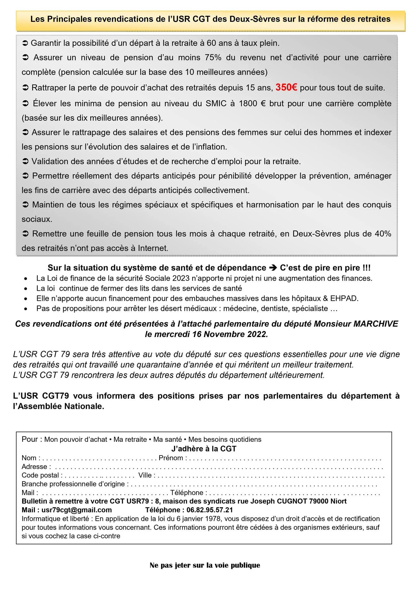

Publication d’archives
Les retraités ne sont pas des nantis et veulent vivre dignement de leur retraite, mais le compte n'y est pas.
Date indiquée par Facebook · 5 décembre 2022
Texte conservé avec la publication
Contexte du dossier
Le rendez-vous des retraités annoncé le 6 décembre sur le parvis de la mairie de Niort porte une exigence de dignité. Le lendemain, le PCF présente un projet alternatif : retraite à 60 ans, prise en compte des périodes de non-travail, cotisation des revenus financiers et nouveaux pouvoirs des salariés. Il appelle à un débat national et à un référendum, dans le cadre de sa campagne de l’époque.
Le 21 décembre, la page soutient les contrôleurs de la SNCF. Elle rappelle le coût de la grève pour ceux qui y participent et leurs demandes de reconnaissance et de salaire. Dans une entreprise de plus en plus numérisée, leur rôle de contact humain est mis en avant. Ce retour à la présence et au travail réel rejoint la critique initiale de 2018 : un service public tient par des personnes, leurs droits et les moyens qu’on leur donne.

Sources
Archive rouge · export Facebook · AR-0002-FB-01802
À lire aussi · Infâme: à Noël Macron dépouille les chômeurs